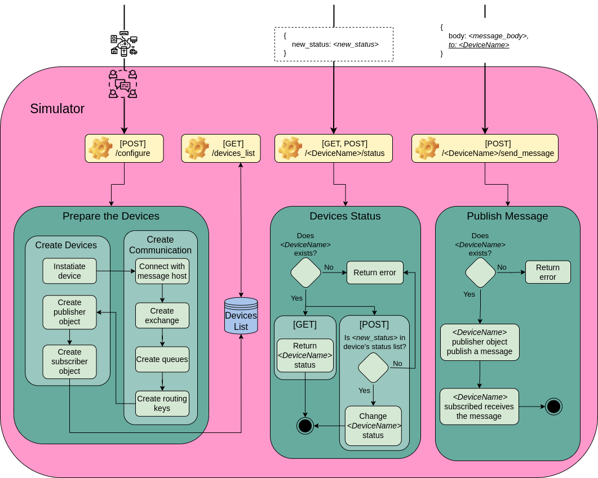

The Simulator operates in the manner shown in Figure below. Four endpoints are present:
- /configure, for configuring the component;
- /devices_list, for getting the list of all configured devices;
- /[DeviceName]/status for getting or changing a device's status;
- /[DeviceName]/send_message, for requesting a device to send a particular message.

The Simulator starts preparing the devices when a request to setup it is submitted. It also creates the communication and the devices throughout that procedure. Each device is initially instantiated. In order to generate the exchange, queues, and routing keys, it then establishes a connection with the communication host set. The names of the two routing keys are constructed using the capitalized letters from the device names, followed by "_info" for the publishing routing key and "_msg" for the receiving routing key, for each device. Each gadget also has a queue. Simulator produces the publisher and subscriber objects after the communication is ready, with the publisher object starting to be prepared to publish a message when asked. It uses "_msg" to subscribe to the device's associated routing keys in order to generate the subscriber object. If the senders are set, it also uses "_info" to subscribe to the relevant sender device's routing key. The binding process then proceeds with each routing key that has subscribed to the device's queue. As soon as the process of subscribing and binding is complete, a thread is launched that executes the subscriber object.
Each newly formed device is kept in a list of devices. The devices list is returned in response to a request for all devices. The /[DeviceName]/status endpoint allows the user to obtain the status of a specific device, however the proper device name must be included in [DeviceName]. As a result, it determines whether the device is real before returning its state. By utilizing the POST method rather than the GET one, the same endpoint may be used to change a device's state. For that, it verifies that the user sends the updated status, and if it already exists in the device's list of updated statuses, it is set.
The user can use the [DeviceName]/send_message endpoint to send a message. The user specifies the message body and, optionally, the message recipient in the request body. The message will be published in the "_info" device's routing key and will be received by the devices subscribing to it if the recipient field is left empty. If the message has a defined recipient, the recipient's routing key with the prefix "_msg" will be made public. The broker is in charge of the message delivery procedure.
The Simulator component was implemented using a layer structure. The component's endpoints are contained in the Controller layer. The Model layer implements the classes that define the device objects, i.e., device, publisher, and subscriber. The functions to communicate with the RabbitMQ broker, such as generating routing keys and queues, are contained in the Service layer. The Utils layer has various auxiliary functions that correspond to operations on strings or lists.